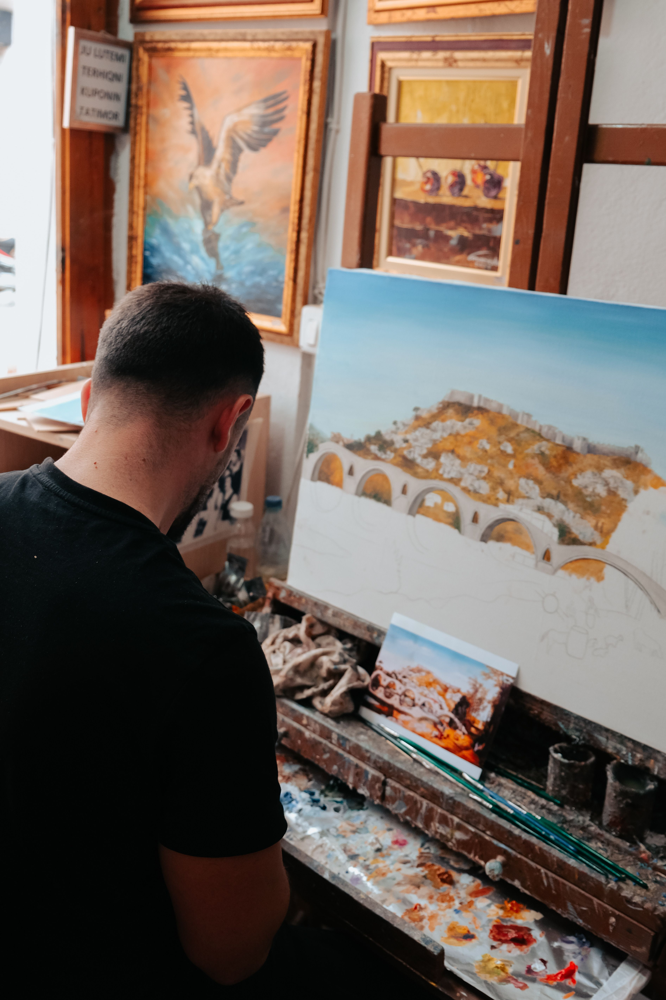
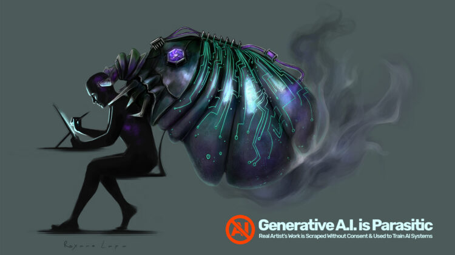
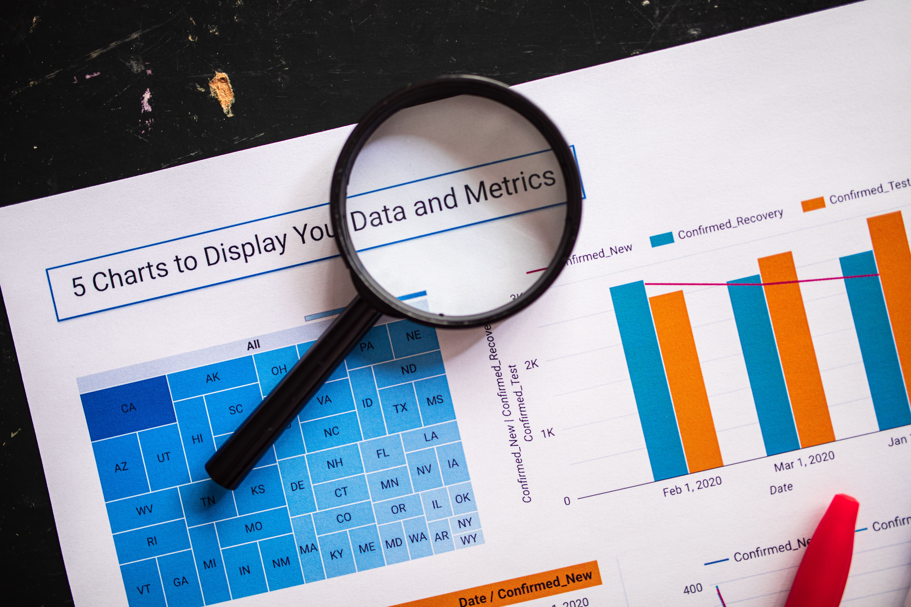
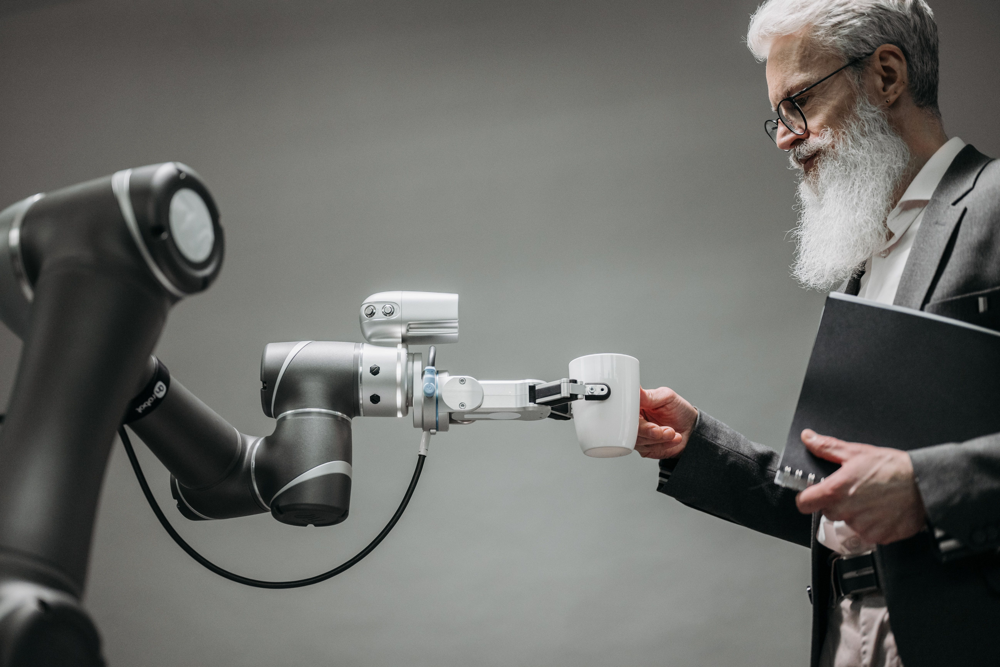

An open space for creative minds
Artistry
Human Creativity is Irreplacable.

The Issue
Generative AI being used in the industry is creating a massive influence on many creators and people in the industry. The idea of using AI in creative works is a nightmare for many creative people and artists as the main concept of creative works such as films, animation and illustrations are not really just for making money but mostly to share their creative and brilliant hard work with others and for people to appreciate. The usage of AI in creative works can be linked to greed, especially with many industries cutting costs by replacing artists with AI in their works instead. AI steals works from other creatives in order to train itself. In a smart way it creates a mashup of stolen and existing works to create something new, however this cannot replace human creativity as human potential is far greater than AI's when it comes to art. AI should only be used in science, academics, businesses and not art.
Why Generative AI Is Not Actually Good for Industry Use
The point of creative works is for artistic appreciation and story telling, especially in films. Using AI in creative works not only cuts corners but it steals artworks from other artists. Someone once said “It’s like running a marathon in a car and saying you finished the marathon.” Of course for people in the business side of things see things like this as a win, however its not really ideal for creatives and many viewers as it might butcher a potentially great artwork. Although AI has grown impressively, it doesn't take away the fact that it has stolen many works from artists all over the globe in order to train itself. This can cause many of its output to be visually similar to already existing works.


Unbiased Information
While AI in industries that mainly create artistic content, film as such isn’t the best, we of course support technological advancements that are made. AI isn't inherently bad overall, in fact it may be able to help humans further their knowledge and creativity in a way if it is used correctly. However if AI were to be used in a way just to cut corners it may take away from the creative work. AI is much better used when it comes to logic, mathematics, science and discovery as well as technical things. Many studies from Tsiavos and Kitsios (2025) actually show that AI can actually be used to enhance narrative depth in screenwriting as it can use other literature as reference. However AI is mostly used unethically and used to replace artists to cut corners and be more cost efficient. While AI is good for business, it's bad for art, creative works such as animation, illustration, and film as it can also limit human creativity as more humans rely on it.
Why Relying on AI Too Much Can Be Bad
Relying on AI too much can lead to loss of critical thinking, creativity and cognitive skills that makes humans superior to AI. AI can be humanity’s key to advancing in technology, scientific discoveries; however it can also become our downfall. “We commit our greatest crimes against nature for the sake of convenience” is a quote from marine explorer and conservationist Jacques Cousteau. This quote is actually true. The more we rely on technology the more we take away from our natural abilities. For example: Vehicles. Vehicles have been around for a very long time. The first steam powered car appeared around the 17th century. Humans were known to travel for miles to explore, to find places they would call home and turn into territory. Humans have also hunted by walking and waiting for their prey to tire out before they do. Nowadays a lot of people can barely get around without relying on transportation. It's how convenience stores were made, so instead of going to the grocery store you can just go across the street. It takes away from our abilities. The same can be said for AI and the human mind. The more we rely on AI the more our capabilities are fed into it, and our minds stagnate or decline.
